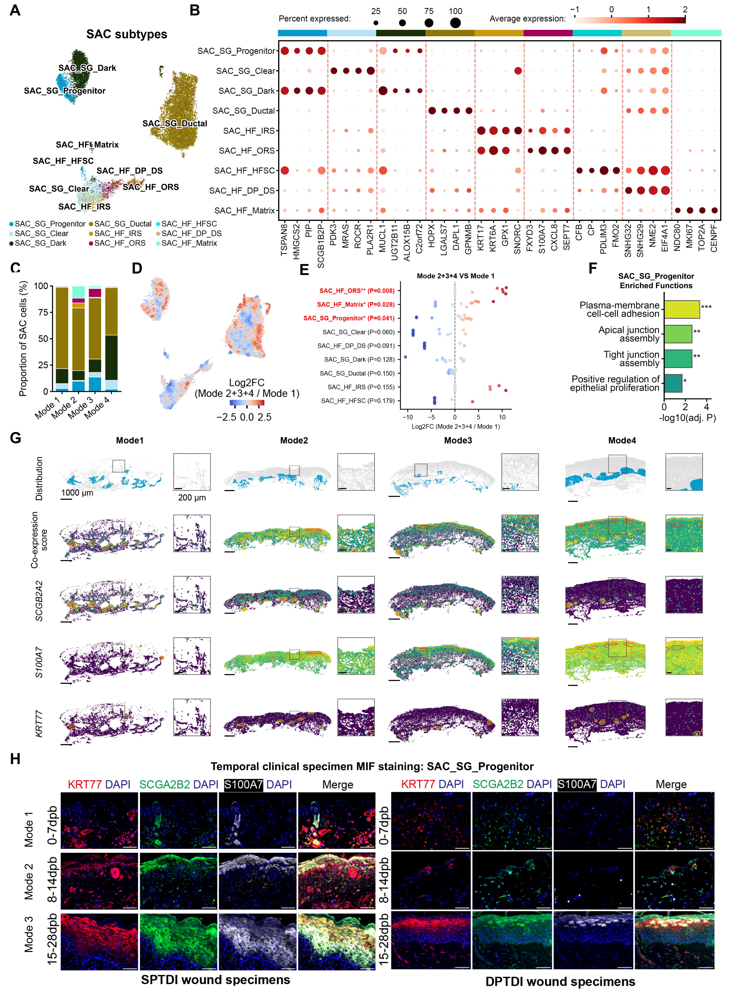

Appendage-associated states, markers, temporal composition and supporting repair programs.
Executed supporting analyses and/or archived sources; see panel-specific status
Source data · Panel manifest · Execution report

| Panel | Description | Status |
|---|---|---|
| S3A | (A) Embedding of nine annotated skin appendage-associated states, retaining hair-follicle and sweat-gland identities. | partial |
| S3B | (B) Marker-expression dot plot for the displayed appendage states. | partial |
| S3C | (C) Relative recovered abundance of appendage states across morphological repair modes. Values summarize the recovered appendage compartment. | partial |
| S3D | (D) Neighborhood-density display comparing later with early clinical phases. Values show the local neighborhood-density contrast. | partial |
| S3E | (E) State-level abundance summaries with displayed comparisons for SAC_SG_Progenitor (P = 0.041), SAC_HF_ORS (P = 0.008), and SAC_HF_Matrix (P = 0.028). | partial |
| S3F | (F) Selected enrichment terms for SAC_SG_Progenitor, including plasma-membrane cell–cell adhesion, apical-junction assembly, tight-junction assembly, and positive regulation of epithelial-cell proliferation. The displayed axis is −log10 adjusted P. | partial |
| S3G | (G) Spatial maps of appendage-associated signals and SCGB2A2, S100A7, and KRT77 across repair modes. Scale bars, 1,000 micrometers. | partial |
| S3H | (H) Multiplex tissue imaging of KRT77 (red), the displayed SCGB2A2-associated channel (green), S100A7 (white), and DAPI (blue) in SPTDI and DPTDI. | partial |
Temporal sampling groups and morphological Mode 1–4 are separate variables; historical N labels and the method/figure version must be reconciled as recorded in the technical audit.